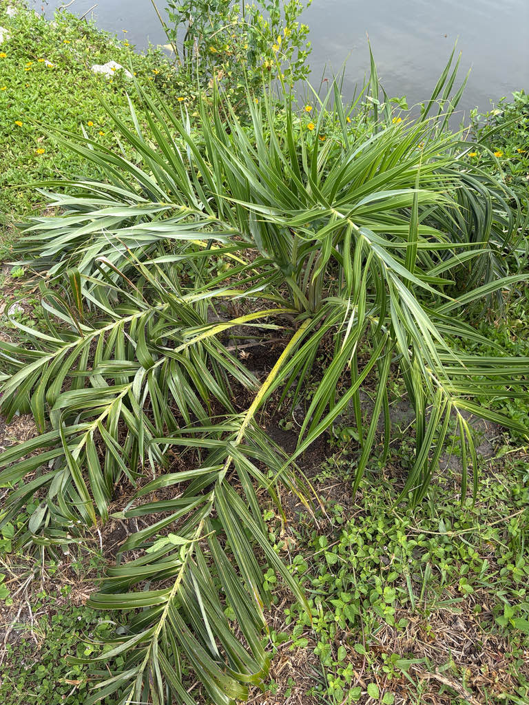

- The Seashore Palm has no visible trunk — its stem runs horizontally underground as a branching rhizome, firing fronds straight out of the sand. It is one of a rare handful of palms in the world that genuinely lives below grade, with its growing point buried safely away from salt spray, heat, and fire.
- When this palm reproduces, it throws up a dense, upright spike that looks exactly like a yellow corn cob. Both male and female flowers spiral up that same stalk, so a single plant can set fruit entirely on its own — no neighbor required.
- The fruit really does look like a thumbnail-sized coconut — which makes sense, because the Seashore Palm is a close cousin in the Arecaceae family. Along the Brazilian coast the aromatic, fibrous pulp is eaten fresh off the spike or pressed into juice and jam.
- In Brazil this palm is an ecological engineer: it colonizes raw, shifting dunes where almost nothing else can survive, then builds cooler, moister, more organic soil around itself — paving the way for less hardy species to follow.
The Seashore Palm is native to the Atlantic coast of Brazil, ranging from the state of Sergipe in the northeast down to eastern Paraná in the south. It is most abundant in Bahia, Espírito Santo, and Rio de Janeiro, where it occupies coastal sand dunes and restinga — the distinctive shrubby vegetation that grows on the sandy strand just above the high tide mark.
It has been cultivated as an ornamental across subtropical and tropical South America for some time, valued for its compact size and extreme coastal toughness. In Florida it remains a specialty item in the palm trade, suited to USDA zones 9b through 11 and used primarily in beachside and coastal-garden settings.
- The name encodes both what the plant looks like and where it lives. Allagoptera is built from the Greek words for 'change' and 'wing,' a reference to the leaflets that angle out at different, seemingly random planes rather than lying flat — giving the fronds a restless, three-dimensional, swirling quality that dances in a coastal breeze. Arenaria simply means 'of sandy places' in Latin.
- Both names fit perfectly.
- The underground stem is the key to this palm's extraordinary resilience. While the plant looks stemless from above, it produces a horizontal rhizome at or just below the sand surface that can branch over time, sending up a loose cluster of fronds.
- That subterranean architecture buries the delicate growing point safely below the reach of blistering coastal winds, salt aerosol, intense heat, and — in its home range — periodic fire.
- In the restinga dune system of eastern Brazil, this palm functions as an ecological pioneer and, in a real sense, a landscape engineer. It tolerates conditions — raw sand, salt aerosol, fierce sun, periodic drought — that exclude almost everything else.
- As its root system anchors the sand and its dead foliage decays, it builds a microhabitat of cooler, moister, more organic soil that other, less tough species can then colonize. It doesn't just survive the coast; it physically begins to build it.
The corn-cob-like inflorescences produce pale yellow flowers that attract bees and beetles in particular. Because the palm is monoecious — bearing both male and female flowers on the same spike — every individual in bloom is simultaneously offering pollen and setting fruit, which extends the productive season for pollinators.
The small, coconut-shaped fruits are an important food source for fruit-eating birds and other fauna in the palm's native restinga habitat, where those animals also serve as its seed dispersers. In Florida cultivation the same dynamic can play out on a modest scale: ripe fruit is taken by birds, making this a quietly useful addition to a wildlife-friendly garden near the coast.
The inflorescence is a dense, upright spike resembling a corn cob on a long stalk — quite different from the branched, drooping flower stalks of many larger palms. Both male and female flowers are borne on the same spike in distinct spirals, so a single plant can set fruit without a cross-pollinator nearby. Flowers are pale yellow to cream.
Small drupes, roughly 1 inch long and about half an inch in diameter, shaped unmistakably like miniature coconuts. Fruit develops in dense clusters on the spike and ripens from yellowish-green to yellow or orange. The pulp is fibrous, aromatic, and edible.
Pinnately compound, 2 to 6 feet long, with leaflets that are deep green to silvery-green above and silvery-white beneath. The key visual feature is that the leaflets are not arranged in a single flat plane — they fan out at different angles along the rachis, giving each frond a three-dimensional, slightly spiraling quality. There are typically 6 to 15 fronds per plant.
The stem is horizontal and largely or entirely subterranean — rarely emerging more than a foot above ground — so the fronds appear to rise directly from the sand. The underground stem may branch over time, creating a loose clump of fronds from what looks like a single plant. Short exposed sections are covered in persistent fibrous leaf bases.
Start by looking down rather than up: there is no trunk to anchor your eye, just a loose, mounded clump of fronds rising straight from the ground. Look closely at any single frond and notice how the leaflets pinwheel out in multiple directions rather than lying flat in a single plane — that restless, swirling quality is exactly what the genus name 'changing wing' describes.
In bloom, look for upright corn-cob-shaped spikes on long stalks emerging from the center of the clump. In fruit, those same stalks carry tight clusters of small, one-inch fruits that ripen from yellowish-green to a vibrant yellow-orange — and look strikingly like thumbnail-sized coconuts, which is no coincidence: this palm and the coconut are close cousins in the same family.
The Seashore Palm is non-toxic to people, dogs, and cats — no chemical defenses hidden here. The small, aromatic fruits are entirely edible; along the Brazilian coast the fibrous pulp is eaten fresh off the spike or pressed into juice and jam that strikes a balance between sweet and sour.
The one handling caveat worth noting: leaf tips and frond edges can be sharp enough to scratch skin, so a little care is warranted when working close to the plant.
The species has accumulated a string of older botanical synonyms — Cocos arenaria, Diplothemium arenarium, Diplothemium littorale, Diplothemium maritimum, and Allagoptera pumila — that turn up in older references and nursery catalogs. The accepted name since 1891 is Allagoptera arenaria (Gomes) Kuntze.
This palm has a planting quirk that catches even experienced horticulturists off guard. It is a tillering palm with a distinctive 'saxophone-style' root system featuring a sharp heel, and the top third of that heel must remain above the soil surface at installation. The instinct to bury it completely — as you would most plants — can slowly suffocate and kill it.

- © Randall Carter (CC-BY-NC), via iNaturalist